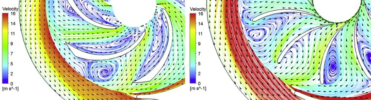
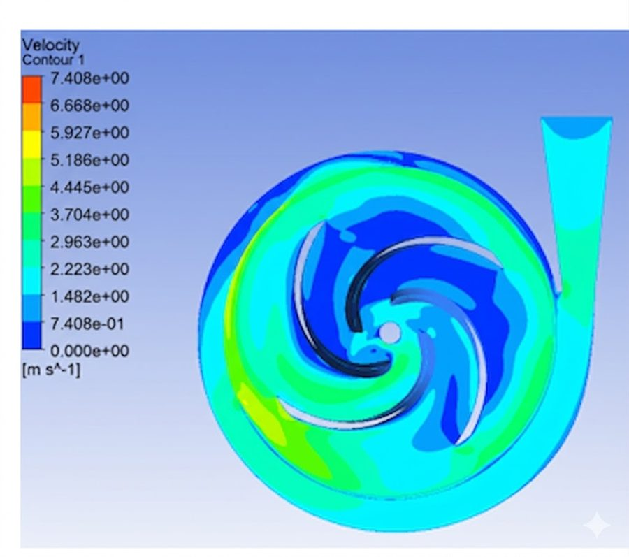
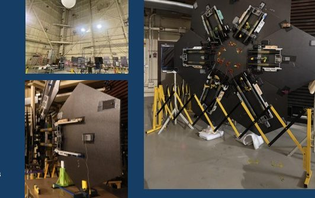
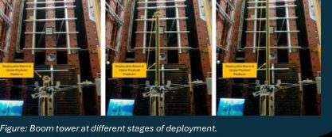
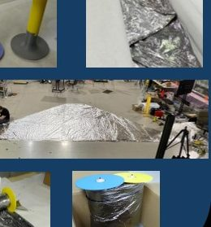
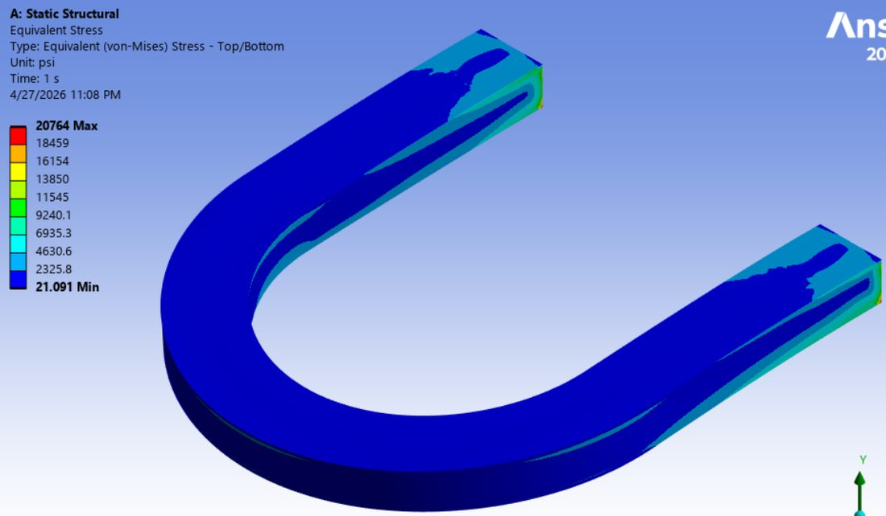
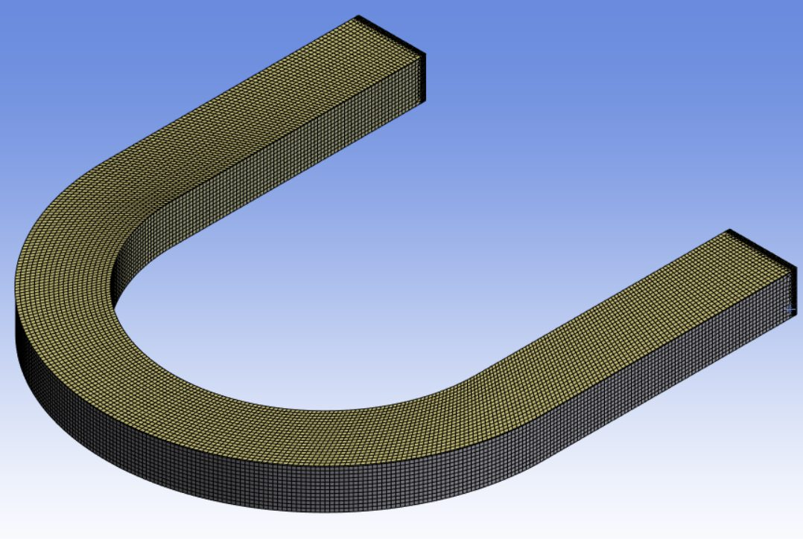
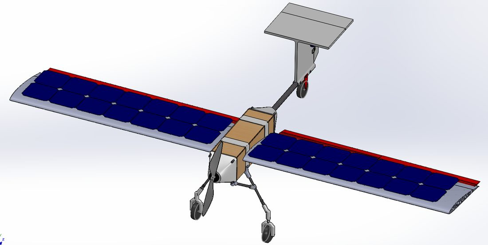
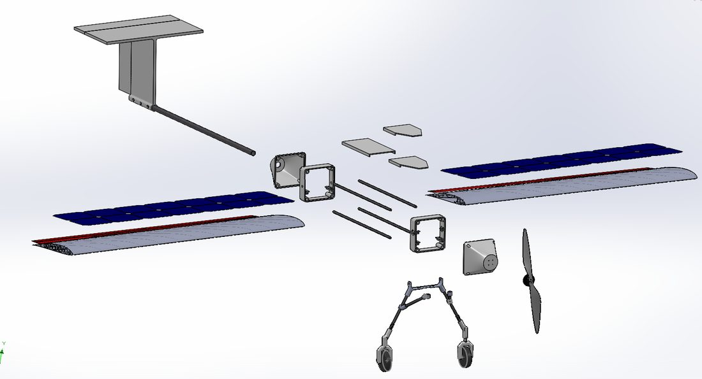
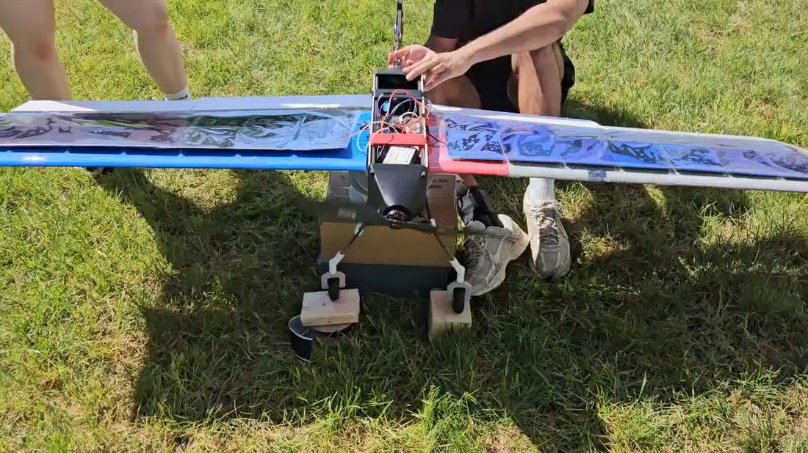

MS MECHANICAL ENGINEERING · OHIO STATE
Mechanical engineer,
working in flow.
Fluid dynamics and CFD — turbomachinery, structures, and the aircraft and hydro systems in between.
drag to spin the Solar Wing model
01 — ABOUT
About me
- MS Mechanical Engineering, The Ohio State University — focus in Simulation and Design Principles, expected May 2027
- BS Mechanical Engineering, The Ohio State University — Summa Cum Laude, thesis in fluid mechanics/turbines, May 2026
- Core focus: fluid dynamics and CFD — turbomachinery, hydraulic systems, and small-aircraft aerodynamics
- Also active in structures — FEA on turbine impellers and a cantilevered glass skywalk
- Background built through internships and research at Pratt & Whitney, NASA Langley, NASA Glenn, Curtiss-Wright, and the Hydro and Aero Energy Laboratory at Ohio State
3.93BS GPA (Summa Cum Laude)
4.00MS GPA (in progress)
4engineering internships
2027expected MS graduation
MECHANICAL / CAD
PHOTOGRAMMETRY / METROLOGY
ELECTRICAL / SOFTWARE
02 — WORK
Experience
Hydro and Aero Energy LaboratoryAcademic Researcher — Simulation and Analytical Modeling Team
March 2025 – Present
Hydro and Aero Energy Laboratory
Academic Researcher — Simulation and Analytical Modeling Team
- Designed and optimized miniature in-pipe turbine geometries for UV disinfection applications, building parametric models in SolidWorks and validating turbulence behavior in ANSYS CFX
- Developed custom MATLAB algorithms to parse and analyze complex fluid dynamics data
- Defended an undergraduate honors thesis on hydropower turbine optimization (full case study under Projects)
Pratt & Whitney – RTXMechanical & Hardware Design Engineering Intern — F135 HPC Design Team
May – Aug 2026
Pratt & Whitney – RTX
Mechanical & Hardware Design Engineering Intern — F135 HPC Design Team
- Built a MATLAB data visualization tool to automatically analyze 500+ engine measurement data points, cutting manual data-processing time by 80% and speeding identification of critical geometric flaws
- Led revision of the engine manual using detailed stress and geometric analysis, establishing new dimensional acceptance criteria applied across a fleet of 1,000+ active engines
- Coordinated structural, aerodynamic, and project teams to redefine airfoil root interaction zone damage tolerances, cutting inspection zones by 50% and accelerating analysis of 100+ rotors
NASA Langley Research CenterMechanical & Hardware Design and Test Engineering Intern — Structural Dynamics Team
June – Aug 2025
NASA Langley Research Center
Mechanical & Hardware Design and Test Engineering Intern — Structural Dynamics Team
- Directed metrology and strain measurement using Vicon optical motion tracking on a space-grade deployable antenna reflector, capturing 1,000+ dynamic data points and validating structural integrity to within 10 mm
- Led the rapid repair of the ACS3 solar sail deployment system — designed and 3D printed 10+ custom hardware components, preventing roughly 5 weeks of test delays
- Co-led design and testing for the NASA Cableway (TRL 1) boom-and-zipline deployment project with a team of 15+ engineers and technicians, delivering on an accelerated 10-week timeline
- Full breakdown of all three projects (APRM, DOPPLER/Cableway, Solar Sail) under Projects
NASA Glenn Research CenterMechanical & Hardware Design Engineering Intern — Instrument Research Team
June – Aug 2024
NASA Glenn Research Center
Mechanical & Hardware Design Engineering Intern — Instrument Research Team
- Published a technical paper in the NASA STI Repository on CNC fabrication workflows and high-temperature sensor circuit design, establishing manufacturing protocols used by 10+ engineers and researchers
- Engineered custom high-temperature heat chambers simulating Venus atmospheric conditions (up to 500°C) to validate the thermal survivability of silicon carbide sensors for proposed Venus exploration missions
Curtiss-WrightMechanical & Hardware Design and Test Engineering Intern — Valve Design and Testing Team
May – Aug 2023
Curtiss-Wright
Mechanical & Hardware Design and Test Engineering Intern — Valve Design and Testing Team
- Designed complex 3D valve assemblies for 3 product lines in Creo, resolving 20+ Quality Notifications and cutting manufacturing rework by 20%
- Validated material performance and durability through experimental testing, heat treatment, and sensor-based diagnostics on 5 valve prototypes rated to 200°C
03 — PROJECTS
Selected work
Pico-hydro pump-as-turbineUndergraduate Honors Thesis — HAEG, CFD / Turbomachinery
Pico-hydro pump-as-turbine
Undergraduate Honors Thesis — HAEG, CFD / Turbomachinery
PROBLEM
- UV-C LED water disinfection needs power; dedicated pico-scale turbines are expensive
- Question: can an off-the-shelf Iwaki MD-10 centrifugal pump, run in reverse with a modified impeller, reach ≥30% hydraulic efficiency?
APPROACH
- CFD in ANSYS CFX, TurboGrid meshing, SST k-ω turbulence, frozen-rotor interface
- Pump mode: 3 flow rates (5.7–10.2 LPM1.5–2.7 GPM) × 4 speeds (1,000–3,500 RPM), matched manufacturer curves
- Turbine mode: 16 design points across two load cases (100 Ω / 200 Ω)
- Original backward-curved impeller: 55% pump-mode peak vs. only 26% turbine-mode peak — a 29-point drop from flow separation and recirculation
- Mirrored the blade curvature to forward-curved in SolidWorks and re-ran the same 16 points

Streamlines, original (left) vs. forward-curved (right)

Velocity contour, impeller + volute
RESULTS
- Forward-curved impeller: 33% peak hydraulic efficiency at 16 LPM / 3,400 RPM (+7 points)
- Clears the 30% threshold above ~14–15 LPM for both load cases
- CFD-only result — excludes mechanical/generator losses; modified impeller not yet built or tested, which is the direct next step
33%peak turbine efficiency, modified
+7 ptsgain over baseline
28CFD design points run
NASA Langley: deployable structuresAPRM · DOPPLER / NASA Cableway · ACS3 Solar Sail
NASA Langley: deployable structures
APRM · DOPPLER / NASA Cableway · ACS3 Solar Sail
Three related projects under PI Dr. Juan M. Fernandez, with fellow interns Julianne Miana and Maxim Somov — all variations on one problem: how do you pack a structure small for launch, then get it to reliably unfold once it's there?
APRM — robotically assembled antenna reflector

- Worked on U-shaped, shape-memory-epoxy slit-booms connecting the reflector's panels
- Directed Vicon motion-capture metrology during deployment — 1,000+ dynamic data points, structural integrity validated to within 10 mm
- Ground testing used a helium-balloon 0g offload rig, a lubricated table, and a preloaded spring latch per panel
DOPPLER / NASA Cableway — lunar boom & zipline tower

- Co-led design and testing of the boom-and-zipline deployment mechanism (TRL 1) with 15+ engineers and technicians, on an accelerated 10-week timeline
- Tested the base leveler and deployment/stabilization system; found the leveler needed more lift and torque, and spec'd a gearbox and limit switches
- Tracked payload-platform deployment with Vicon; the boom had a maximum stable height the adaptive controller needed tuning around
ACS3 Solar Sail — rapid repair & folding

- Led rapid repair of the ACS3 solar sail deployment system — designed and 3D printed 10+ custom hardware components, preventing roughly 5 weeks of test delays
- Mapped micro- and macro-tears across a 20 m² sail quadrant (sails are 2–2.5 micron chromium/aluminum-coated PEN)
- Repairs used aluminum-covered PEN patches, heat-set adhesive, and Teflon sheet; each sail folds to fit on two 10-inch spools
3deployable-structures projects
1,000+Vicon data points, APRM
0gballoon offload technique
Grand Canyon Skywalk FEASimulation Lead — with Caleb Bench, Kan Suzuki & Sahil Sura
Grand Canyon Skywalk FEA
Simulation Lead — with Caleb Bench, Kan Suzuki & Sahil Sura
PROBLEM
- Horseshoe-shaped, glass-bottomed bridge cantilevered 70 ft21.3 m past the canyon rim, with nothing underneath it
- Must withstand 100 mph wind, an M8.0 seismic event, and crowds up to 120 people
- Team project: evaluate structural performance under realistic loading via FEA
APPROACH
- Built the cantilever steel structure in SolidWorks; solved in ANSYS Mechanical with SHELL181 elements
- A572 Grade 50 steel; 5-layer laminated glass deck modeled as a solid plate
- Switched the glass-to-steel contact from bonded to frictional (μ = 0.15) — resolved unrealistic stress islands at the connection
- Load cases: gravity + crowd load, 100 mph wind, four thermal cases (−7°C to 49°C19°F to 120°F), and a 6-mode modal analysis

Von Mises stress contour, ANSYS Mechanical

Mesh, cantilever section
RESULTS
- Baseline tip deflection: 1.81 in46 mm (≈L/468), within 12% of a hand-calc sanity check
- Peak stress 9,172 psi63.2 MPa against a 50,000 psi yield — factor of safety ≈5.4
- Wind changed deformation by only 0.03% — a gravity-dominated structure, not a wind-dominated one
- Thermal camber: −7°C19°F pushed deflection to 2.04 in52 mm; 49°C120°F cambered the tip upward to 1.68 in43 mm
- Modal analysis: natural frequencies from 3.26 to 13.55 Hz across the first six modes
9,172 psi63.2 MPapeak Von Mises stress
FS ≈ 5.4factor of safety vs. yield
12%agreement with hand calc
Solar Wing UAVDesign Lead — with Jon, Neil & Riley
Solar Wing UAV
Design Lead — with Jon, Neil & Riley
PROBLEM
- Farmers need longer-endurance crop-monitoring drones than battery-only UAVs allow
- Team brief: design, build, and flight-test a solar-augmented fixed-wing UAV with in-flight charging and live video
APPROACH
- Structured sizing as an "Engineering Thought Plan": Electrical Foundation → Propulsion Optimization → Solar Sizing → Wing Integration → Fuselage Synthesis
- SD7037 airfoil; 24-cell solar array sized conservatively from measured cell voltage
- Engineered the aero-structural architecture, optimizing mass distribution and energy budgets
- Validated composite wing assembly integrity through static and dynamic FEA — mitigated solar-cell micro-fractures, sustaining up to 30 N of aerodynamic load
- My part: the solar/power testing and the post-flight data analysis

Full assembly CAD, SolidWorks

Exploded view

Field test day
RESULTS
- Solar charging: 10 minutes at 50% throttle dropped the battery only 0.23V with solar assist, vs. 1.39V without — roughly a sixfold reduction
- Live video held throughout the test
- The test flight itself didn't go as planned: the wing's structural support hadn't accounted for transport/reassembly at the flight site, and a back-spar failure kept us from sustained flight — traced to a transportability gap, not the electrical system
- By project completion, delivered a prototype rated for 15 hours of sustained-flight evaluation
0.23 Vbattery drop w/ solar, 10 min
1.39 Vdrop without solar, same run
30 Naero load sustained, wing FEA
CFD / TURBOMACHINERY
Extended pump-as-turbine study
Follow-on steady-state RANS work: mesh sensitivity at the volute tongue, leading-edge rounding, validated against manufacturer curves.
04 — CONTACT
Get in touch
Reach out by email or LinkedIn, or download my résumé below.